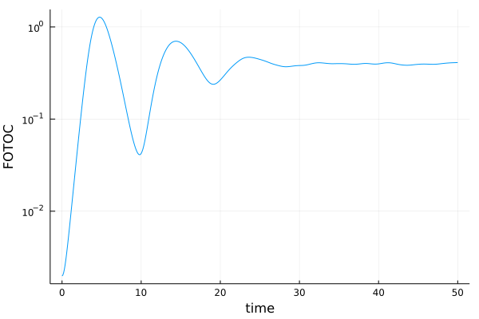

<!DOCTYPE html>
<html lang="en"><head><meta charset="UTF-8"/><meta name="viewport" content="width=device-width, initial-scale=1.0"/><title>ClassicalLMG · DickeModel.jl</title><script data-outdated-warner src="../assets/warner.js"></script><link href="https://cdnjs.cloudflare.com/ajax/libs/lato-font/3.0.0/css/lato-font.min.css" rel="stylesheet" type="text/css"/><link href="https://cdnjs.cloudflare.com/ajax/libs/juliamono/0.039/juliamono-regular.css" rel="stylesheet" type="text/css"/><link href="https://cdnjs.cloudflare.com/ajax/libs/font-awesome/5.15.3/css/fontawesome.min.css" rel="stylesheet" type="text/css"/><link href="https://cdnjs.cloudflare.com/ajax/libs/font-awesome/5.15.3/css/solid.min.css" rel="stylesheet" type="text/css"/><link href="https://cdnjs.cloudflare.com/ajax/libs/font-awesome/5.15.3/css/brands.min.css" rel="stylesheet" type="text/css"/><link href="https://cdnjs.cloudflare.com/ajax/libs/KaTeX/0.13.11/katex.min.css" rel="stylesheet" type="text/css"/><script>documenterBaseURL=".."</script><script src="https://cdnjs.cloudflare.com/ajax/libs/require.js/2.3.6/require.min.js" data-main="../assets/documenter.js"></script><script src="../siteinfo.js"></script><script src="../../versions.js"></script><link class="docs-theme-link" rel="stylesheet" type="text/css" href="../assets/themes/documenter-dark.css" data-theme-name="documenter-dark" data-theme-primary-dark/><link class="docs-theme-link" rel="stylesheet" type="text/css" href="../assets/themes/documenter-light.css" data-theme-name="documenter-light" data-theme-primary/><script src="../assets/themeswap.js"></script><link href="../assets/customcss.css" rel="stylesheet" type="text/css"/></head><body><div id="documenter"><nav class="docs-sidebar"><div class="docs-package-name"><span class="docs-autofit"><a href="../">DickeModel.jl</a></span></div><form class="docs-search" action="../search/"><input class="docs-search-query" id="documenter-search-query" name="q" type="text" placeholder="Search docs"/></form><ul class="docs-menu"><li><a class="tocitem" href="../">The DickeModel.jl package</a></li><li><span class="tocitem">Documentation</span><ul><li><a class="tocitem" href="../ClassicalDicke/">ClassicalDicke</a></li><li><a class="tocitem" href="../DickeBCE/">DickeBCE</a></li><li><a class="tocitem" href="../UPOs/">UPOs</a></li><li><a class="tocitem" href="../TWA/">TWA</a></li><li><a class="tocitem" href="../EnergyShellProjections/">EnergyShellProjections</a></li><li><a class="tocitem" href="../ClassicalLMG/">ClassicalLMG</a></li><li><a class="tocitem" href="../ClassicalSystems/">ClassicalSystems</a></li><li><a class="tocitem" href="../PhaseSpaces/">PhaseSpaces</a></li></ul></li><li><span class="tocitem">Examples</span><ul><li><a class="tocitem" href="../ClassicalDickeExamples/">ClassicalDicke</a></li><li><a class="tocitem" href="../DickeBCEExamples/">DickeBCE (Quantum Dicke)</a></li><li><a class="tocitem" href="../EnergyShellProjectionsExamples/">EnergyShellProjections</a></li><li><a class="tocitem" href="../TWAExamples/">TWA</a></li><li class="is-active"><a class="tocitem" href>ClassicalLMG</a><ul class="internal"><li><a class="tocitem" href="#Exponential-growth-of-the-FOTOC-using-the-TWA"><span>Exponential growth of the FOTOC using the TWA</span></a></li></ul></li><li><a class="tocitem" href="../UPOsExamples/">UPOs</a></li></ul></li><li><a class="tocitem" href="../references/">References</a></li></ul><div class="docs-version-selector field has-addons"><div class="control"><span class="docs-label button is-static is-size-7">Version</span></div><div class="docs-selector control is-expanded"><div class="select is-fullwidth is-size-7"><select id="documenter-version-selector"></select></div></div></div></nav><div class="docs-main"><header class="docs-navbar"><nav class="breadcrumb"><ul class="is-hidden-mobile"><li><a class="is-disabled">Examples</a></li><li class="is-active"><a href>ClassicalLMG</a></li></ul><ul class="is-hidden-tablet"><li class="is-active"><a href>ClassicalLMG</a></li></ul></nav><div class="docs-right"><a class="docs-edit-link" href="https://github.com/saulpila/DickeModel.jl/blob/master/docs/src/ClassicalLMGExamples.md" title="Edit on GitHub"><span class="docs-icon fab"></span><span class="docs-label is-hidden-touch">Edit on GitHub</span></a><a class="docs-settings-button fas fa-cog" id="documenter-settings-button" href="#" title="Settings"></a><a class="docs-sidebar-button fa fa-bars is-hidden-desktop" id="documenter-sidebar-button" href="#"></a></div></header><article class="content" id="documenter-page"><h1 id="Examples-for-ClassicalDicke"><a class="docs-heading-anchor" href="#Examples-for-ClassicalDicke">Examples for ClassicalDicke</a><a id="Examples-for-ClassicalDicke-1"></a><a class="docs-heading-anchor-permalink" href="#Examples-for-ClassicalDicke" title="Permalink"></a></h1><h2 id="Exponential-growth-of-the-FOTOC-using-the-TWA"><a class="docs-heading-anchor" href="#Exponential-growth-of-the-FOTOC-using-the-TWA">Exponential growth of the FOTOC using the TWA</a><a id="Exponential-growth-of-the-FOTOC-using-the-TWA-1"></a><a class="docs-heading-anchor-permalink" href="#Exponential-growth-of-the-FOTOC-using-the-TWA" title="Permalink"></a></h2><p>In Ref. <a href="../references/#Pilatowsky2020">[11]</a>, it was shown that the fidelity out-of-time order  correlator (FOTOC) corresponding the the unstable fixed point <span>$(Q,P)=(0,0)$</span> at the excited-state  quantum phase transition of the Lipkin-Meshkov-Glick (LMG) model grows eponentially,  even though it is a regular system. In this example we calculate such quantity  using the Truncated Wigner Approximation (TWA)</p><pre><code class="language-julia">using DickeModel.TWA, DickeModel.ClassicalLMG
using Plots

fixed_point = ClassicalLMG.Point(Q=0, P=0)

systemLMG = ClassicalLMGSystem(Ω=1, ξ=-1)
j = 500
W = coherent_Wigner_SU2(fixed_point, j =j)
ts=0:0.1:50
FOTOC= sum.(
        variance(systemLMG,
        observable = [:Q,:P],
        N = 5000,
        ts = ts,
        distribution = W)
    )

plot(ts,FOTOC,
    yscale=:log10,
    xlabel=&quot;time&quot;,
    ylabel=&quot;FOTOC&quot;,
    key=false)</code></pre><pre class="documenter-example-output">
Progress:  90%|████████████████████████████████████▊    |  ETA: 0:00:00
Progress: 100%|█████████████████████████████████████████| Time: 0:00:01</pre><p></p></article><nav class="docs-footer"><a class="docs-footer-prevpage" href="../TWAExamples/">« TWA</a><a class="docs-footer-nextpage" href="../UPOsExamples/">UPOs »</a><div class="flexbox-break"></div><p class="footer-message">Powered by <a href="https://github.com/JuliaDocs/Documenter.jl">Documenter.jl</a> and the <a href="https://julialang.org/">Julia Programming Language</a>.</p></nav></div><div class="modal" id="documenter-settings"><div class="modal-background"></div><div class="modal-card"><header class="modal-card-head"><p class="modal-card-title">Settings</p><button class="delete"></button></header><section class="modal-card-body"><p><label class="label">Theme</label><div class="select"><select id="documenter-themepicker"><option value="documenter-light">documenter-light</option><option value="documenter-dark">documenter-dark</option></select></div></p><hr/><p>This document was generated with <a href="https://github.com/JuliaDocs/Documenter.jl">Documenter.jl</a> version 0.27.3 on <span class="colophon-date" title="Friday 16 July 2021 16:44">Friday 16 July 2021</span>. Using Julia version 1.6.2.</p></section><footer class="modal-card-foot"></footer></div></div></div></body></html>
